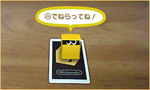
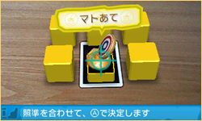
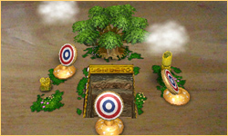

そもそも『ARゲームズ』の「AR」とは、コンピューターを使って、現実の中に存在しないものを合成する「拡張現実」という技術のことです。そこで、実際に机の上に置いた「？」のカードにニンテンドー3DSのカメラを向けてみます。すると、画面に写し出されたカードからムクムクッと黄色い箱があらわれます。
もちろん、この黄色い箱が出てくるのは、3DSの画面の中だけです。しかし、たとえば箱の右側から3DSの画面をのぞいてみると、まるで本当にそこにあるかのように、箱の右側を見ることができます。

これだけでも最初はビックリですが、心を落ち着けて、黄色い箱をねらってAボタンで弾を放ってみます。
新しく箱が6つ出てきました。手前の列の中央にある「マトあて」を撃ってゲームスタートです！
新しく箱が6つ出てきました。手前の列の中央にある「マトあて」を撃ってゲームスタートです！
「マトあて」は、その名のとおり「マトをねらって矢をあてる」というシンプルなゲームです。しかし、ねらうマトは机に空いた大きな穴の奥にかくれていたり、マトの下にある机がウネウネと動いたりします。これもAR技術を使った合成映像なのです！

マトにうまく矢をあてるには、3DS本体の向きを変えたり、カードの横や後ろに自分の体ごと移動したりする必要があります。しばらく遊んでいると、まるで本当にあるマトをねらって矢を放っているような、リアルで不思議な感覚が味わえます。
最後のステージまでクリアすると、クリアまでにかかった時間が表示されるので、最速タイムを目指してタイムアタックにチャレンジしてみましょう！
最後のステージまでクリアすると、クリアまでにかかった時間が表示されるので、最速タイムを目指してタイムアタックにチャレンジしてみましょう！